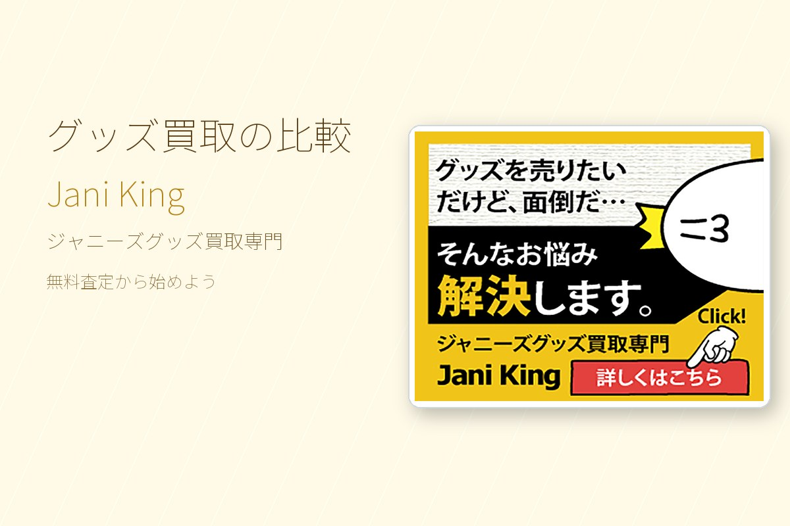

グッズ買取 相場｜売る前に比較したいポイントと手順

結論：グッズ買取は状態・付属品・需要の3点で査定額が変わります。まずは無料査定で比較するのがおすすめです。
※ リンク先は広告主の公式サイトです（アフィリエイトリンク）
査定額が変わる3つの要素
| 要素 | 影響 |
|---|---|
| 状態 | 傷や汚れがあると減額されやすい |
| 付属品 | 箱・説明書・特典があるとプラスに |
| 需要 | 人気作品や限定品は高値になりやすい |
売る前の手順
- 売る商品をリストアップする
- 状態を写真で記録する
- 複数社で無料査定を比べる
- 納得した業者に申し込む
まずは査定だけ
すぐに売らなくても、査定額を知っておくだけで判断がしやすくなります。A8.net経由なら買取成立で報酬が発生する案件もあります。
無料査定を申し込む →※ リンク先は広告主の公式サイトです（アフィリエイトリンク）
状態を良く見せるコツ
査定前にほこりを軽く拭き、付属品を揃えておくだけで印象が変わります。ただし、無理にクリーニングすると傷がつくこともあるため、慎重に扱いましょう。
複数社比較がおすすめな理由
同じ商品でも、得意ジャンルによって査定額は大きく異なります。1社の査定だけで決めず、2〜3社で比べると納得の価格で売りやすくなります。
売却後の手続き
- 本人確認書類を提出する
- 商品を発送する
- 再査定の結果を確認する
- 代金を受け取る
買取成立までの流れ
- 買取サイトで事前査定を申し込む
- 商品を梱包して発送する
- 到着後に再が行われる
- 査定額に同意すると代金が振り込まれる
※ 手続きの詳細は各買取サービスの公式サイトをご確認ください。
査定額を上げる3つの準備
- 付属品を揃える：箱・説明書・特典・カード類があると評価が上がりやすい
- 状態を記録する：傷や汚れを写真で残すとトラブル防止になる
- 複数社で比較する：得意ジャンルが異なるため査定額に差が出る
買取サービスの選び方
| 確認点 | 理由 |
|---|---|
| 取り扱いジャンル | 自分のグッズに詳しい業者ほど高値がつきやすい |
| 送料の負担 | 送料無料のサービスもある |
| キャンセル時の返送料 | 査定額に納得しない場合のコストを確認 |
| 入金時期 | 振り込みまでの日数はサービスで異なる |
売る前に知っておきたいこと
査定額は市場の需要と在庫状況によって変動します。提示された金額はその時点の目安であり、現品到着後の再査定で変わる場合があります。納得できない場合はキャンセルできるか、事前確認しておきましょう。
よくある質問
- 査定は無料？
- 多くの買取サービスで無料査定が可能です。詳細は公式サイトをご確認ください。
- 送料は誰が負担？
- 業者によって異なります。送料無料キャンペーンを行うサービスもあります。
- 売れないグッズはどうなる？
- 買取不可の場合、返送されることが一般的です。返送料の負担はサービスによります。
- 査定額に納得しない場合は？
- キャンセルできるサービスが多いですが、規定を事前に確認してください。
※ リンク先は広告主の公式サイトです（アフィリエイトリンク）